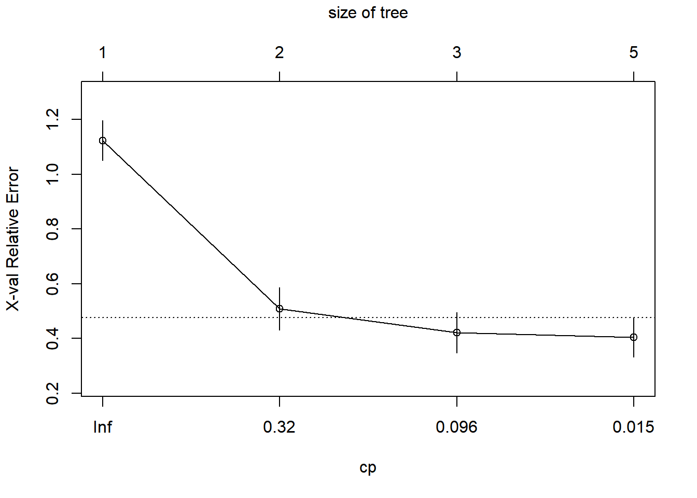
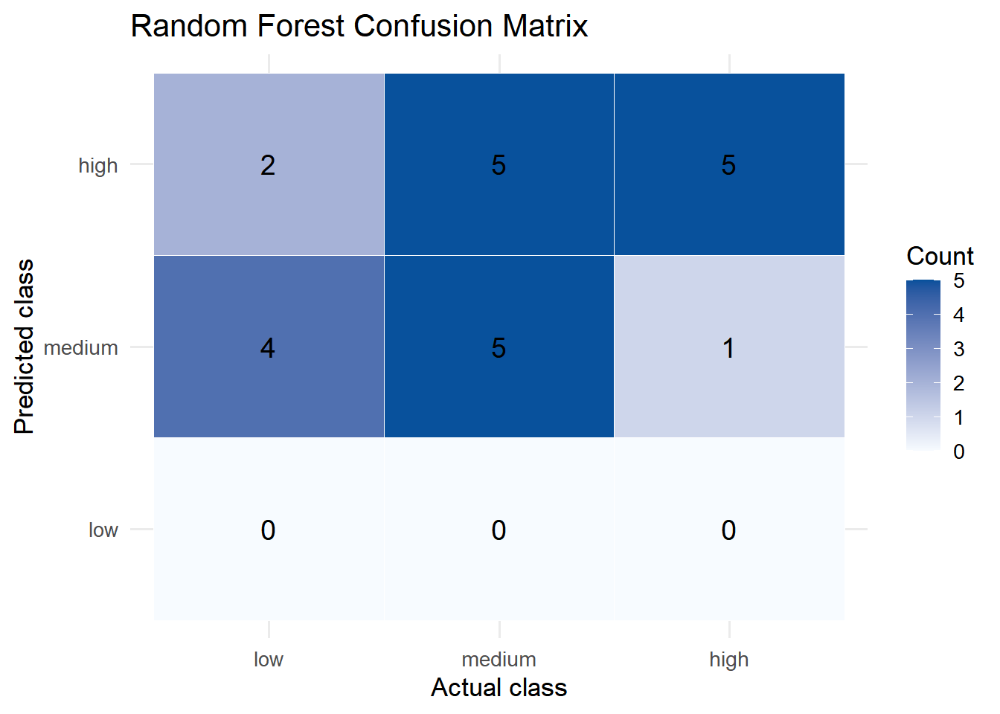
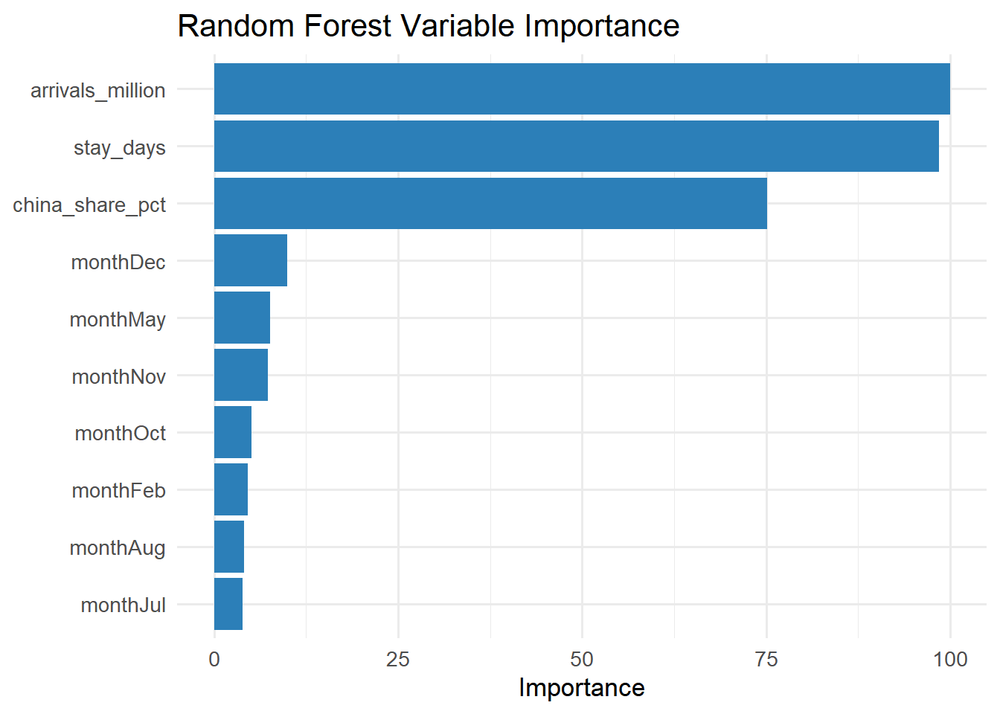

Show the code
pacman::p_load(
tidyverse,
readxl,
lubridate,
writexl
)pacman::p_load(
tidyverse,
readxl,
lubridate,
writexl
)base_dir <- "D:/GitHub/Qinhao/ISSS608-VAA/Take-home-exercise/Take-Home-Exercise2"
raw_path <- file.path(base_dir, "data", "Name your insight (2).xlsx")
processed_dir <- file.path(base_dir, "data")
dir.create(processed_dir, recursive = TRUE, showWarnings = FALSE)col_names <- c(
"date",
"avg_stay_monthly",
"hotel_occ",
"spend_per_capita",
"tourism_receipts",
"avg_stay_annual",
"visitor_arrivals",
"visitor_arrivals_china"
)
raw_tbl <- readxl::read_excel(
path = raw_path,
sheet = "My Series",
skip = 29,
col_names = FALSE
) %>%
setNames(col_names) %>%
mutate(
date = as.Date(date),
across(-date, as.numeric)
) %>%
arrange(date)glimpse(raw_tbl)Rows: 111
Columns: 8
$ date <date> 2015-12-01, 2016-12-01, 2017-01-01, 2017-02-01…
$ avg_stay_monthly <dbl> NA, 3.214346, 3.517353, 3.423516, 3.150551, 3.2…
$ hotel_occ <dbl> NA, 79.61207, 81.76737, 88.02775, 84.67201, 85.…
$ spend_per_capita <dbl> 1429.751, 1569.697, NA, NA, NA, NA, NA, NA, NA,…
$ tourism_receipts <dbl> 21777.20, 25748.45, NA, NA, NA, NA, NA, NA, NA,…
$ avg_stay_annual <dbl> NA, 3.429859, NA, NA, NA, NA, NA, NA, NA, NA, N…
$ visitor_arrivals <dbl> NA, 1506134, 1480479, 1361010, 1480161, 1470750…
$ visitor_arrivals_china <dbl> NA, 226020, 316805, 268993, 264711, 252135, 232…colSums(is.na(raw_tbl)) date avg_stay_monthly hotel_occ
0 1 1
spend_per_capita tourism_receipts avg_stay_annual
101 101 101
visitor_arrivals visitor_arrivals_china
1 1 monthly_clean <- raw_tbl %>%
filter(
!is.na(date),
!is.na(avg_stay_monthly),
!is.na(hotel_occ),
!is.na(visitor_arrivals),
!is.na(visitor_arrivals_china)
) %>%
mutate(
year = lubridate::year(date),
month = lubridate::month(date),
quarter = lubridate::quarter(date),
period = case_when(
date <= as.Date("2020-01-01") ~ "pre_covid",
date <= as.Date("2021-12-01") ~ "covid_shock",
TRUE ~ "recovery"
),
china_share = visitor_arrivals_china / visitor_arrivals,
china_share_pct = china_share * 100
)stay_cap <- quantile(monthly_clean$avg_stay_monthly, probs = 0.95, na.rm = TRUE)
monthly_clean <- monthly_clean %>%
mutate(
avg_stay_monthly_capped = pmin(avg_stay_monthly, stay_cap),
visitor_arrivals_millions = visitor_arrivals / 1000000,
visitor_arrivals_china_thousands = visitor_arrivals_china / 1000
)occ_cuts <- quantile(monthly_clean$hotel_occ, probs = c(1/3, 2/3), na.rm = TRUE)
analysis_ready <- monthly_clean %>%
mutate(
cluster_z_visitor_arrivals = as.numeric(scale(visitor_arrivals)),
cluster_z_china_share = as.numeric(scale(china_share)),
cluster_z_hotel_occ = as.numeric(scale(hotel_occ)),
cluster_z_avg_stay_monthly_capped = as.numeric(scale(avg_stay_monthly_capped)),
hotel_occ_level_tertile = case_when(
hotel_occ <= occ_cuts[[1]] ~ "low",
hotel_occ <= occ_cuts[[2]] ~ "medium",
TRUE ~ "high"
),
hotel_occ_level_business = case_when(
hotel_occ < 70 ~ "low",
hotel_occ <= 85 ~ "medium",
TRUE ~ "high"
)
) %>%
mutate(
hotel_occ_level_tertile = factor(hotel_occ_level_tertile, levels = c("low", "medium", "high")),
hotel_occ_level_business = factor(hotel_occ_level_business, levels = c("low", "medium", "high"))
) %>%
mutate(
dataset_split = if_else(row_number() <= floor(n() * 0.8), "train", "test")
)decision_tree_ready <- analysis_ready %>%
select(
date, year, month, quarter, period,
visitor_arrivals, visitor_arrivals_china,
china_share, china_share_pct,
hotel_occ, avg_stay_monthly, avg_stay_monthly_capped,
hotel_occ_level_tertile, hotel_occ_level_business,
dataset_split
)readr::write_csv(monthly_clean, file.path(processed_dir, "tourism_monthly_clean.csv"))
readr::write_csv(decision_tree_ready, file.path(processed_dir, "tourism_decision_tree_ready.csv"))
readr::write_csv(analysis_ready, file.path(processed_dir, "tourism_four_part_analysis_ready.csv"))
writexl::write_xlsx(
list(
monthly_clean = monthly_clean,
decision_tree_ready = decision_tree_ready,
analysis_ready_all = analysis_ready
),
path = file.path(processed_dir, "tourism_four_part_analysis_ready.xlsx")
)cat("Data preparation complete.\n")Data preparation complete.cat("Rows in monthly_clean:", nrow(monthly_clean), "\n")Rows in monthly_clean: 110 cat("Rows in analysis_ready:", nrow(analysis_ready), "\n")Rows in analysis_ready: 110 cat("Date range:", min(analysis_ready$date), "to", max(analysis_ready$date), "\n")Date range: 17136 to 20454 cat("95% cap for avg_stay_monthly:", round(stay_cap, 6), "\n")95% cap for avg_stay_monthly: 33.83166 cat("Hotel occupancy cut points:", round(occ_cuts[[1]], 6), "and", round(occ_cuts[[2]], 6), "\n")Hotel occupancy cut points: 77.98317 and 84.15092 pacman::p_load(
tidyverse,
rpart,
rpart.plot,
caret,
visNetwork,
htmlwidgets,
sparkline
)base_dir <- "D:/GitHub/Qinhao/ISSS608-VAA/Take-home-exercise/Take-Home-Exercise2"
data_path <- file.path(base_dir, "data", "tourism_decision_tree_ready.csv")
output_dir <- file.path(base_dir, "outputs")
dir.create(output_dir, recursive = TRUE, showWarnings = FALSE)df <- readr::read_csv(data_path, show_col_types = FALSE) %>%
mutate(
date = as.Date(date),
month = factor(
month,
levels = 1:12,
labels = c("Jan", "Feb", "Mar", "Apr", "May", "Jun",
"Jul", "Aug", "Sep", "Oct", "Nov", "Dec")
),
quarter = factor(quarter),
period = factor(period, levels = c("pre_covid", "covid_shock", "recovery")),
dataset_split = factor(dataset_split, levels = c("train", "test")),
hotel_occ_level_tertile = factor(
hotel_occ_level_tertile,
levels = c("low", "medium", "high")
),
# 为了让树图上的阈值更易读，创建展示型变量
arrivals_million = visitor_arrivals / 1000000,
china_share_pct = china_share * 100,
stay_days = avg_stay_monthly_capped
)
glimpse(df)Rows: 110
Columns: 17
$ date <date> 2016-12-01, 2017-01-01, 2017-02-01, 2017-03-…
$ year <dbl> 2016, 2017, 2017, 2017, 2017, 2017, 2017, 201…
$ month <fct> Dec, Jan, Feb, Mar, Apr, May, Jun, Jul, Aug, …
$ quarter <fct> 4, 1, 1, 1, 2, 2, 2, 3, 3, 3, 4, 4, 4, 1, 1, …
$ period <fct> pre_covid, pre_covid, pre_covid, pre_covid, p…
$ visitor_arrivals <dbl> 1506134, 1480479, 1361010, 1480161, 1470750, …
$ visitor_arrivals_china <dbl> 226020, 316805, 268993, 264711, 252135, 23236…
$ china_share <dbl> 0.1500663, 0.2139882, 0.1976422, 0.1788393, 0…
$ china_share_pct <dbl> 15.00663, 21.39882, 19.76422, 17.88393, 17.14…
$ hotel_occ <dbl> 79.61207, 81.76737, 88.02775, 84.67201, 85.06…
$ avg_stay_monthly <dbl> 3.214346, 3.517353, 3.423516, 3.150551, 3.280…
$ avg_stay_monthly_capped <dbl> 3.214346, 3.517353, 3.423516, 3.150551, 3.280…
$ hotel_occ_level_tertile <fct> medium, medium, high, high, high, medium, med…
$ hotel_occ_level_business <chr> "medium", "medium", "high", "medium", "high",…
$ dataset_split <fct> train, train, train, train, train, train, tra…
$ arrivals_million <dbl> 1.506134, 1.480479, 1.361010, 1.480161, 1.470…
$ stay_days <dbl> 3.214346, 3.517353, 3.423516, 3.150551, 3.280…train_df <- df %>% filter(dataset_split == "train")
test_df <- df %>% filter(dataset_split == "test")
cat("Train rows:", nrow(train_df), "\n")Train rows: 88 cat("Test rows:", nrow(test_df), "\n")Test rows: 22 Target variable: Hotel occupancy rate level (low / medium / high)
Independent variables: # arrivals_million = Total inbound tourists (in millions)
china_share_pct = Proportion of Chinese tourists (percentage)
stay_days = Truncated average length of stay
month = Month (seasonality)
fit_tree <- rpart::rpart(
hotel_occ_level_tertile ~ arrivals_million + china_share_pct + stay_days + month,
data = train_df,
method = "class",
parms = list(split = "gini"),
control = rpart::rpart.control(
cp = 0.005,
maxdepth = 4,
minsplit = 10,
minbucket = 5,
xval = 10
)
)printcp(fit_tree)
Classification tree:
rpart::rpart(formula = hotel_occ_level_tertile ~ arrivals_million +
china_share_pct + stay_days + month, data = train_df, method = "class",
parms = list(split = "gini"), control = rpart::rpart.control(cp = 0.005,
maxdepth = 4, minsplit = 10, minbucket = 5, xval = 10))
Variables actually used in tree construction:
[1] arrivals_million month
Root node error: 57/88 = 0.64773
n= 88
CP nsplit rel error xerror xstd
1 0.49123 0 1.00000 1.12281 0.073296
2 0.21053 1 0.50877 0.50877 0.077359
3 0.04386 2 0.29825 0.42105 0.073296
4 0.00500 4 0.21053 0.40351 0.072311plotcp(fit_tree)
bestcp <- fit_tree$cptable[which.min(fit_tree$cptable[, "xerror"]), "CP"]
pruned_tree <- prune(fit_tree, cp = bestcp)
cat("Best cp:", bestcp, "\n")Best cp: 0.005 print(pruned_tree)n= 88
node), split, n, loss, yval, (yprob)
* denotes terminal node
1) root 88 57 low (0.35227273 0.29545455 0.35227273)
2) arrivals_million< 0.7575905 31 3 low (0.90322581 0.09677419 0.00000000) *
3) arrivals_million>=0.7575905 57 26 high (0.05263158 0.40350877 0.54385965)
6) month=Jan,May,Dec 16 3 medium (0.12500000 0.81250000 0.06250000) *
7) month=Feb,Mar,Apr,Jun,Jul,Aug,Sep,Oct,Nov 41 11 high (0.02439024 0.24390244 0.73170732)
14) arrivals_million< 1.466122 22 11 high (0.04545455 0.45454545 0.50000000)
28) month=Mar,Apr,Jun 5 0 medium (0.00000000 1.00000000 0.00000000) *
29) month=Feb,Jul,Aug,Sep,Oct,Nov 17 6 high (0.05882353 0.29411765 0.64705882) *
15) arrivals_million>=1.466122 19 0 high (0.00000000 0.00000000 1.00000000) *tree_vis <- visNetwork::visTree(
pruned_tree,
data = as.data.frame(train_df),
main = "Decision Tree for Hotel Occupancy Level",
submain = "Target: low / medium / high",
width = "100%",
height = "700px",
nodesFontSize = 16,
edgesFontSize = 14,
fallenLeaves = TRUE,
legend = TRUE,
nodesPopSize = TRUE,
minNodeSize = 14,
maxNodeSize = 32,
highlightNearest = list(enabled = TRUE, hover = TRUE),
export = TRUE
)
tree_vishtmlwidgets::saveWidget(
tree_vis,
file.path(output_dir, "decision_tree_visual.html"),
selfcontained = FALSE
)png(
filename = file.path(output_dir, "decision_tree_static.png"),
width = 1800,
height = 1200,
res = 180
)
rpart.plot::rpart.plot(
pruned_tree,
type = 2,
extra = 104,
under = TRUE,
fallen.leaves = TRUE,
faclen = 0,
tweak = 1.15,
main = "Decision Tree for Hotel Occupancy Level"
)
dev.off()png
2 pred_class <- predict(pruned_tree, newdata = test_df, type = "class")
pred_prob <- predict(pruned_tree, newdata = test_df, type = "prob") %>%
as.data.frame()
# 统一 levels，避免 confusionMatrix 报错
pred_class <- factor(pred_class, levels = c("low", "medium", "high"))
test_df$hotel_occ_level_tertile <- factor(
test_df$hotel_occ_level_tertile,
levels = c("low", "medium", "high")
)cm <- caret::confusionMatrix(
data = pred_class,
reference = test_df$hotel_occ_level_tertile
)
print(cm)Confusion Matrix and Statistics
Reference
Prediction low medium high
low 0 0 0
medium 6 5 0
high 0 5 6
Overall Statistics
Accuracy : 0.5
95% CI : (0.2822, 0.7178)
No Information Rate : 0.4545
P-Value [Acc > NIR] : 0.4131
Kappa : 0.2143
Mcnemar's Test P-Value : NA
Statistics by Class:
Class: low Class: medium Class: high
Sensitivity 0.0000 0.5000 1.0000
Specificity 1.0000 0.5000 0.6875
Pos Pred Value NaN 0.4545 0.5455
Neg Pred Value 0.7273 0.5455 1.0000
Prevalence 0.2727 0.4545 0.2727
Detection Rate 0.0000 0.2273 0.2727
Detection Prevalence 0.0000 0.5000 0.5000
Balanced Accuracy 0.5000 0.5000 0.8438metrics_tbl <- tibble(
metric = c("accuracy", "kappa"),
value = c(cm$overall[["Accuracy"]], cm$overall[["Kappa"]])
)
print(metrics_tbl)# A tibble: 2 × 2
metric value
<chr> <dbl>
1 accuracy 0.5
2 kappa 0.214importance_tbl <- tibble(
variable = names(pruned_tree$variable.importance),
importance = as.numeric(pruned_tree$variable.importance)
) %>%
arrange(desc(importance))
print(importance_tbl)# A tibble: 4 × 2
variable importance
<chr> <dbl>
1 arrivals_million 27.0
2 stay_days 23.4
3 month 14.3
4 china_share_pct 12.6write.csv(
as.data.frame(cm$table),
file.path(output_dir, "decision_tree_confusion_matrix.csv"),
row.names = FALSE
)
write.csv(
metrics_tbl,
file.path(output_dir, "decision_tree_metrics.csv"),
row.names = FALSE
)
write.csv(
importance_tbl,
file.path(output_dir, "decision_tree_variable_importance.csv"),
row.names = FALSE
)
prediction_tbl <- bind_cols(
test_df %>% select(date, hotel_occ, hotel_occ_level_tertile),
tibble(predicted_class = pred_class),
pred_prob
)
write.csv(
prediction_tbl,
file.path(output_dir, "decision_tree_test_predictions.csv"),
row.names = FALSE
)
cat("Decision tree analysis complete.\n")Decision tree analysis complete.cat("Outputs saved to:", output_dir, "\n")Outputs saved to: D:/GitHub/Qinhao/ISSS608-VAA/Take-home-exercise/Take-Home-Exercise2/outputs set.seed(1234)
ctrl <- trainControl(
method = "repeatedcv",
number = 5,
repeats = 3,
classProbs = TRUE
)
grid <- expand.grid(
mtry = c(2, 3, 4),
splitrule = "gini",
min.node.size = c(1, 3, 5)
)
rf_model <- caret::train(
hotel_occ_level_tertile ~ arrivals_million + china_share_pct + stay_days + month,
data = train_df,
method = "ranger",
trControl = ctrl,
tuneGrid = grid,
num.trees = 300,
importance = "impurity",
metric = "Accuracy"
)
print(rf_model)Random Forest
88 samples
4 predictor
3 classes: 'low', 'medium', 'high'
No pre-processing
Resampling: Cross-Validated (5 fold, repeated 3 times)
Summary of sample sizes: 70, 71, 70, 70, 71, 70, ...
Resampling results across tuning parameters:
mtry min.node.size Accuracy Kappa
2 1 0.7418301 0.6093103
2 3 0.7307190 0.5930416
2 5 0.7383442 0.6044631
3 1 0.7383442 0.6046287
3 3 0.7305011 0.5927131
3 5 0.7346405 0.5996972
4 1 0.7457516 0.6159337
4 3 0.7344227 0.5988396
4 5 0.7342048 0.5984216
Tuning parameter 'splitrule' was held constant at a value of gini
Accuracy was used to select the optimal model using the largest value.
The final values used for the model were mtry = 4, splitrule = gini
and min.node.size = 1.print(rf_model$bestTune) mtry splitrule min.node.size
7 4 gini 1pred_class <- predict(rf_model, newdata = test_df)
pred_prob <- predict(rf_model, newdata = test_df, type = "prob")
pred_class <- factor(pred_class, levels = c("low", "medium", "high"))
test_df$hotel_occ_level_tertile <- factor(
test_df$hotel_occ_level_tertile,
levels = c("low", "medium", "high")
)cm <- caret::confusionMatrix(
data = pred_class,
reference = test_df$hotel_occ_level_tertile
)
print(cm)Confusion Matrix and Statistics
Reference
Prediction low medium high
low 0 0 0
medium 4 5 1
high 2 5 5
Overall Statistics
Accuracy : 0.4545
95% CI : (0.2439, 0.6779)
No Information Rate : 0.4545
P-Value [Acc > NIR] : 0.58197
Kappa : 0.1538
Mcnemar's Test P-Value : 0.03407
Statistics by Class:
Class: low Class: medium Class: high
Sensitivity 0.0000 0.5000 0.8333
Specificity 1.0000 0.5833 0.5625
Pos Pred Value NaN 0.5000 0.4167
Neg Pred Value 0.7273 0.5833 0.9000
Prevalence 0.2727 0.4545 0.2727
Detection Rate 0.0000 0.2273 0.2273
Detection Prevalence 0.0000 0.4545 0.5455
Balanced Accuracy 0.5000 0.5417 0.6979metrics_tbl <- tibble(
metric = c("accuracy", "kappa"),
value = c(cm$overall[["Accuracy"]], cm$overall[["Kappa"]])
)
print(metrics_tbl)# A tibble: 2 × 2
metric value
<chr> <dbl>
1 accuracy 0.455
2 kappa 0.154importance_tbl <- varImp(rf_model)$importance %>%
tibble::rownames_to_column("variable") %>%
arrange(desc(Overall))
print(importance_tbl) variable Overall
1 arrivals_million 100.000000
2 stay_days 98.474771
3 china_share_pct 75.164831
4 monthDec 9.978753
5 monthMay 7.612103
6 monthNov 7.266777
7 monthOct 5.054497
8 monthFeb 4.548187
9 monthAug 4.084512
10 monthJul 3.908262
11 monthJun 1.531650
12 monthSep 1.491992
13 monthMar 1.009493
14 monthApr 0.000000conf_tbl <- as.data.frame(cm$table)
conf_plot <- ggplot(conf_tbl, aes(x = Reference, y = Prediction, fill = Freq)) +
geom_tile(color = "white") +
geom_text(aes(label = Freq), size = 5) +
scale_fill_gradient(low = "#f7fbff", high = "#08519c") +
labs(
title = "Random Forest Confusion Matrix",
x = "Actual class",
y = "Predicted class",
fill = "Count"
) +
theme_minimal(base_size = 13)
print(conf_plot)
ggsave(
filename = file.path(output_dir, "random_forest_confusion_heatmap.png"),
plot = conf_plot,
width = 8,
height = 6,
dpi = 200
)importance_plot <- importance_tbl %>%
slice_max(order_by = Overall, n = 10) %>%
ggplot(aes(x = reorder(variable, Overall), y = Overall)) +
geom_col(fill = "#2c7fb8") +
coord_flip() +
labs(
title = "Random Forest Variable Importance",
x = NULL,
y = "Importance"
) +
theme_minimal(base_size = 13)
print(importance_plot)
ggsave(
filename = file.path(output_dir, "random_forest_importance.png"),
plot = importance_plot,
width = 8,
height = 6,
dpi = 200
)tree_grid <- seq(50, 300, by = 25)
oob_tbl <- purrr::map_dfr(tree_grid, function(nt) {
mod <- ranger::ranger(
hotel_occ_level_tertile ~ arrivals_million + china_share_pct + stay_days + month,
data = train_df,
num.trees = nt,
mtry = rf_model$bestTune$mtry,
min.node.size = rf_model$bestTune$min.node.size,
splitrule = as.character(rf_model$bestTune$splitrule),
importance = "impurity",
seed = 1234
)
tibble(
num_trees = nt,
oob_error = mod$prediction.error,
oob_accuracy = 1 - mod$prediction.error
)
})
print(oob_tbl)# A tibble: 11 × 3
num_trees oob_error oob_accuracy
<dbl> <dbl> <dbl>
1 50 0.318 0.682
2 75 0.318 0.682
3 100 0.307 0.693
4 125 0.295 0.705
5 150 0.284 0.716
6 175 0.284 0.716
7 200 0.295 0.705
8 225 0.295 0.705
9 250 0.295 0.705
10 275 0.341 0.659
11 300 0.330 0.670oob_plot <- ggplot(oob_tbl, aes(x = num_trees, y = oob_accuracy)) +
geom_line(color = "#238b45", linewidth = 1) +
geom_point(color = "#238b45", size = 2) +
labs(
title = "OOB Accuracy vs Number of Trees",
x = "Number of trees",
y = "OOB accuracy"
) +
theme_minimal(base_size = 13)
print(oob_plot)
ggsave(
filename = file.path(output_dir, "random_forest_oob_accuracy.png"),
plot = oob_plot,
width = 8,
height = 6,
dpi = 200
)pred_plot_df <- test_df %>%
transmute(
date,
actual = hotel_occ_level_tertile,
predicted = pred_class
) %>%
pivot_longer(
cols = c(actual, predicted),
names_to = "series",
values_to = "level"
)
pred_plot <- ggplot(pred_plot_df, aes(x = date, y = level, color = series, shape = series)) +
geom_point(size = 3) +
labs(
title = "Actual vs Predicted Hotel Occupancy Level",
x = "Date",
y = "Occupancy level"
) +
scale_color_manual(values = c(actual = "#d95f0e", predicted = "#3182bd")) +
theme_minimal(base_size = 13)
print(pred_plot)
ggsave(
filename = file.path(output_dir, "random_forest_actual_vs_predicted.png"),
plot = pred_plot,
width = 9,
height = 5,
dpi = 200
)write.csv(
metrics_tbl,
file.path(output_dir, "random_forest_metrics.csv"),
row.names = FALSE
)
write.csv(
conf_tbl,
file.path(output_dir, "random_forest_confusion_matrix.csv"),
row.names = FALSE
)
write.csv(
importance_tbl,
file.path(output_dir, "random_forest_variable_importance.csv"),
row.names = FALSE
)
write.csv(
oob_tbl,
file.path(output_dir, "random_forest_oob_accuracy.csv"),
row.names = FALSE
)
prediction_tbl <- bind_cols(
test_df %>% select(date, hotel_occ_level_tertile),
tibble(predicted_class = pred_class),
pred_prob
)
write.csv(
prediction_tbl,
file.path(output_dir, "random_forest_test_predictions.csv"),
row.names = FALSE
)
cat("Random forest analysis complete.\n")Random forest analysis complete.cat("Outputs saved to:", output_dir, "\n")Outputs saved to: D:/GitHub/Qinhao/ISSS608-VAA/Take-home-exercise/Take-Home-Exercise2/outputs